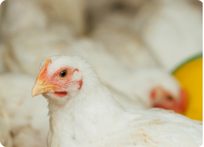
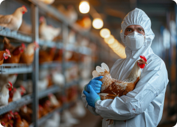
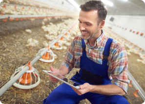
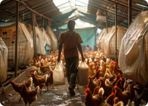
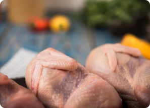

Inventaris Hewan Ternak

Inventaris hewan ternak adalah sistem pencatatan dan pengelolaan
data yang mencakup jumlah, jenis, usia, kondisi kesehatan, dan
status reproduksi hewan di peternakan. Sistem ini membantu
peternak memantau perkembangan ternak, memastikan kesejahteraan
mereka, serta merencanakan strategi pemeliharaan yang lebih
efisien dan produktif.
API data real-time cuaca BMKG
API data real-time cuaca BMKG menyediakan akses langsung ke
informasi cuaca terkini, seperti suhu, kelembaban, curah hujan,
dan kecepatan angin, yang dapat diintegrasikan ke dalam
aplikasi. API ini membantu berbagai sektor, termasuk pertanian
dan peternakan, untuk memprediksi dan mengantisipasi perubahan
cuaca, sehingga memungkinkan perencanaan yang lebih baik dan
tindakan pencegahan terhadap cuaca ekstrem.
Monitoring Kesehatan pada Ayam(CV/ML)

Monitoring kesehatan ayam menggunakan Computer Vision (CV) dan
Machine Learning (ML) melibatkan teknologi untuk mendeteksi dan
menganalisis kondisi kesehatan ayam secara real-time. CV
memungkinkan pemantauan visual ayam melalui kamera untuk
mendeteksi perubahan perilaku dan tanda-tanda penyakit,
sementara ML menganalisis data untuk mengenali pola normal dan
anomali, memberikan diagnosis serta rekomendasi perawatan.
Pendekatan ini memungkinkan deteksi dini penyakit, menghemat
waktu pemantauan manual, dan memberikan keputusan berbasis data,
sehingga peternak dapat mengelola kesehatan kawanan dengan lebih
efisien dan efektif.
Laporan Peternakan Ayam

Laporan peternakan ayam adalah catatan digital yang dimasukkan
langsung melalui aplikasi mobile, mencakup data penting seperti
jumlah ayam, kondisi kesehatan, konsumsi pakan, dan hasil
produksi. Aplikasi ini memudahkan peternak untuk memantau
kinerja secara real-time, membuat laporan harian, dan mengambil
keputusan yang tepat untuk meningkatkan produktivitas dan
manajemen peternakan secara efisien.
Pengingat Pakan Terjadwal

Fitur pengingat penjadwalan pemberian pakan adalah fungsi dalam
aplikasi yang memberi notifikasi otomatis kepada peternak
mengenai jadwal pemberian pakan ternak. Dengan fitur ini,
peternak dapat memastikan pakan diberikan tepat waktu, menjaga
kesehatan dan produktivitas hewan ternak secara optimal.
Pendataan Hasil Produksi Daging Ayam

Pendataan hasil produksi daging ayam adalah proses pencatatan
jumlah daging ayam yang dihasilkan setelah panen. Data ini
mencakup berat total, jumlah ayam yang dipanen, serta kualitas
daging. Proses ini membantu peternak memantau produktivitas,
mengevaluasi kinerja peternakan, dan merencanakan distribusi
atau penjualan secara efisien.